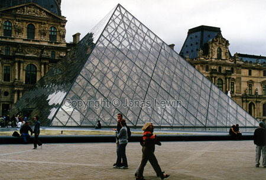
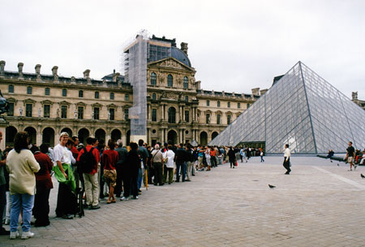
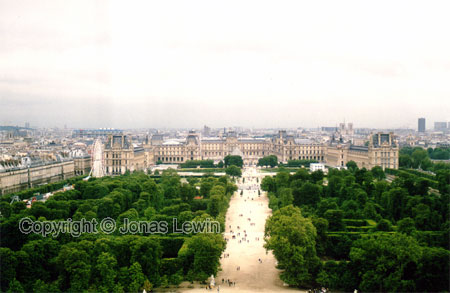

The Louvre.
It takes a while, just to get in.
Afterwards I discovered that there are
other entrances, that had much less queues.
 Outside,
they had an "Arc De Triomphe", which was much smaller than the original one.
Outside,
they had an "Arc De Triomphe", which was much smaller than the original one.
If
you take a ride in the Ferris wheel, you see a long way. You also discover
that the Louvre is really big.